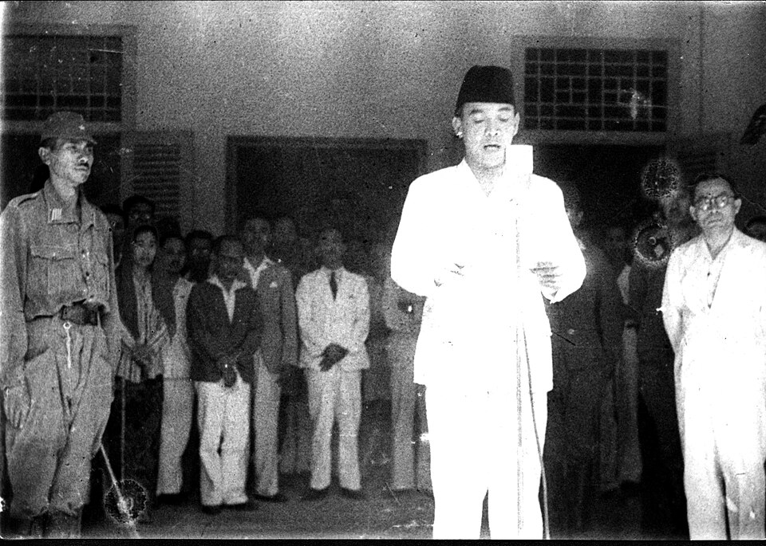
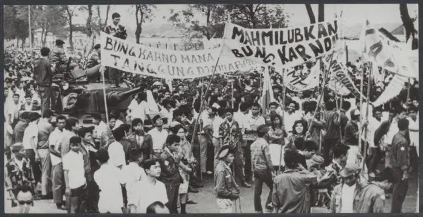

PANCASILA
Pelajari Lebih LanjutLima Sila Pancasila
Ketuhanan Yang Maha Esa
Kemanusiaan yang Adil dan Beradab
Persatuan Indonesia
Kerakyatan yang Dipimpin oleh Hikmat Kebijaksanaan dalam Permusyawaratan/Perwakilan
Keadilan Sosial bagi Seluruh Rakyat Indonesia
Sejarah Pancasila Era Orde Lama
Perjalanan Pancasila pada masa pemerintahan Presiden Soekarno (1945–1966).

Awal Penerapan Pancasila
Setelah Proklamasi Kemerdekaan pada 17 Agustus 1945, Pancasila ditetapkan sebagai dasar negara melalui pengesahan UUD 1945 oleh PPKI pada 18 Agustus 1945.

Demokrasi Terpimpin
Pada 5 Juli 1959, Presiden Soekarno mengeluarkan Dekrit Presiden yang memberlakukan kembali UUD 1945. Indonesia kemudian memasuki masa Demokrasi Terpimpin.

Akhir Era Orde Lama
Krisis politik dan ekonomi pada 1965–1966 menjadi salah satu faktor berakhirnya pemerintahan Orde Lama dan dimulainya masa peralihan menuju Orde Baru.
PENGANTAR PENDIDIKAN PANCASILA DAN PANCASILA SEBAGAI IDEOLOGI NEGARA
PENGANTAR PENDIDIKAN PANCASILA
Latar Belakang Pendidikan Pancasila
Pendidikan Pancasila merupakan pembelajaran yang bertujuan membentuk karakter dan kepribadian bangsa. Di tengah perkembangan globalisasi, Pancasila menjadi pedoman agar masyarakat tetap memiliki identitas nasional dan tidak kehilangan nilai-nilai kebangsaan.
Pembangunan Karakter Bangsa
Pendidikan Pancasila berperan dalam membentuk karakter warga negara yang sesuai dengan nilai-nilai luhur bangsa, seperti:- Jujur dan disiplin.
- Bertanggung jawab.
- Peduli terhadap sesama.
- Mengutamakan gotong royong.
- Memiliki rasa cinta tanah air dan toleransi.
Landasan Hukum Pendidikan Pancasila
Pendidikan Pancasila memiliki dasar hukum yang memperkuat kedudukannya dalam sistem pendidikan Indonesia, antara lain:- UUD Negara Republik Indonesia Tahun 1945.
- UU No. 20 Tahun 2003 tentang Sistem Pendidikan Nasional.
- UU No. 12 Tahun 2012 tentang Pendidikan Tinggi.
Kerangka Konseptual
Pendidikan Pancasila mencakup tiga aspek utama:- Pengetahuan: memahami sejarah, dasar, dan nilai Pancasila.
- Sikap: menghayati serta menghargai nilai-nilai Pancasila.
- Keterampilan: menerapkan nilai Pancasila dalam kehidupan sehari-hari.
Permasalahan dalam Kehidupan Berbangsa
Pentingnya Pendidikan Pancasila dapat dilihat dari berbagai persoalan nasional, seperti korupsi, rendahnya kesadaran membayar pajak, kerusakan lingkungan, disintegrasi bangsa, kemerosotan moral, penyalahgunaan narkoba, ketidakadilan hukum, dan terorisme.Visi dan Misi Pendidikan Pancasila
Pendidikan Pancasila memiliki visi membentuk warga negara yang berkarakter dan berkepribadian sesuai nilai Pancasila. Misinya adalah memberikan pemahaman, penghayatan, dan kemampuan untuk mengamalkan nilai-nilai tersebut.Tujuan Pendidikan Pancasila
Membentuk mahasiswa yang memahami Pancasila, memiliki rasa kebangsaan, serta mampu menjadikan nilai-nilai Pancasila sebagai pedoman dalam kehidupan bermasyarakat, berbangsa, dan bernegara.Empat Pilar Pembelajaran UNESCO
Pendidikan Pancasila berkaitan dengan empat pilar pembelajaran:- Learning to Know: belajar untuk mengetahui.
- Learning to Do: belajar untuk melakukan.
- Learning to Be: belajar untuk menjadi pribadi yang baik.
- Learning to Live Together: belajar hidup bersama secara harmonis
PANCASILA MENJADI IDEOLOGI NEGARA
Pengertian Ideologi
Ideologi merupakan kumpulan gagasan, nilai, keyakinan, dan cita-cita yang menjadi pedoman dalam kehidupan suatu kelompok atau negara. Ideologi berfungsi memberikan arah, tujuan, serta dasar dalam menentukan sikap dan kebijakan.
Sumber Ideologi
Ideologi dapat terbentuk dari beberapa sumber, di antaranya:- Nilai dan kebudayaan masyarakat.
- Ajaran atau nilai keagamaan.
- Pemikiran dan gagasan para tokoh.
Pancasila sebagai Ideologi Negara
Pancasila menjadi ideologi negara karena nilai-nilainya berasal dari kehidupan dan kepribadian bangsa Indonesia. Pancasila menjadi dasar pemikiran dalam penyelenggaraan negara serta pedoman bagi masyarakat.Urgensi Pancasila sebagai Ideologi
Pancasila memiliki peran penting untuk:- Menjaga persatuan dan kesatuan bangsa.
- Menjadi pedoman penyelenggaraan negara.
- Memperkuat identitas nasional.
- Memberikan arah dan tujuan kehidupan bangsa.
- Menjadi penyaring pengaruh budaya asing.
Permasalahan dalam Kehidupan Berbangsa
Pentingnya Pendidikan Pancasila dapat dilihat dari berbagai persoalan nasional, seperti korupsi, rendahnya kesadaran membayar pajak, kerusakan lingkungan, disintegrasi bangsa, kemerosotan moral, penyalahgunaan narkoba, ketidakadilan hukum, dan terorisme.Ideologi Terbuka dan Tertutup
Ideologi terbuka bersifat dinamis dan mampu menyesuaikan diri dengan perkembangan zaman tanpa menghilangkan nilai dasarnya. Sebaliknya, ideologi tertutup cenderung bersifat kaku dan memaksakan pemikiran tertentu. Pancasila termasuk ideologi terbuka karena penerapannya dapat berkembang sesuai kebutuhan masyarakat, selama tidak bertentangan dengan nilai dasarnya.Pentingnya Memahami Ideologi Pancasila
Masyarakat dan penyelenggara negara perlu memahami Pancasila agar setiap tindakan, keputusan, dan kebijakan tetap berpedoman pada nilai ketuhanan, kemanusiaan, persatuan, demokrasi, dan keadilan sosial.Sumber Historis, Sosiologis, dan Politis
-- Historis: Pancasila terbentuk melalui perjalanan sejarah dan perjuangan bangsa Indonesia.- Sosiologis: nilai Pancasila tumbuh dari kehidupan, kebiasaan, dan budaya masyarakat.
- Politis: Pancasila menjadi dasar dalam kehidupan ketatanegaraan dan penyelenggaraan pemerintahan.
Dinamika Pancasila sebagai Ideologi
Penerapan Pancasila mengalami perkembangan dalam beberapa periode sejarah:- Orde Lama: masa awal penerapan Pancasila setelah kemerdekaan.
- Orde Baru: Pancasila dijadikan dasar kehidupan bernegara dengan penerapan yang memiliki dinamika tersendiri.
- Reformasi: muncul upaya memperkuat demokrasi dan mengamalkan Pancasila dalam kehidupan berbangsa.
Tantangan Pancasila sebagai Ideologi
Tantangan dapat berasal dari dalam maupun luar negeri. Contohnya adalah individualisme, radikalisme, intoleransi, konflik sosial, pengaruh globalisasi, dan masuknya nilai-nilai yang bertentangan dengan kepribadian bangsa.Tiga Dimensi Ideologi Pancasila
- Dimensi Realitas: nilai Pancasila berasal dari kehidupan nyata masyarakat.- Dimensi Idealisme: Pancasila mengandung cita-cita dan harapan bangsa.
- Dimensi Fleksibilitas: Pancasila mampu menyesuaikan penerapannya dengan perkembangan zaman.
Penerapan Lima Sila Pancasila
- Ketuhanan: menghormati perbedaan agama dan kepercayaan.- Kemanusiaan: memperlakukan setiap orang secara adil dan bermartabat.
- Persatuan: menjaga kerukunan dan keutuhan bangsa.
- Kerakyatan: mengutamakan musyawarah dalam mengambil keputusan.
- Keadilan Sosial: menciptakan kesejahteraan dan kesempatan yang adil bagi seluruh masyarakat.
ANGGOTA KELOMPOK 01
Arva Danisyah Nirzam
1512626002
Ararya Gentala Putra Safardan
1512626038
Berland Prastiyo Wiranatha
1512626001
Daffa Zakhwan Afandi
1512626064
Fandika Esa Pratama
1512626032